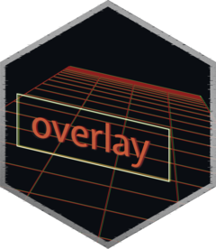

Render, warp, and composite a ggplot2, gt, or code snippet over a background image
Source:R/hud_overlay.R
hud_overlay.RdA convenience wrapper that chains render_hud(), (optionally) hud_panel(),
(optionally) warp_hud(), and composite_hud() in a single call.
Usage
hud_overlay(
overlay,
background,
x = NULL,
y = NULL,
placement = NULL,
margin = 40L,
size = NULL,
width = NULL,
height = NULL,
panel = FALSE,
tilt = NULL,
corners = NULL,
opacity = 0.85,
bg = "transparent",
res = 150,
keep_size = TRUE,
supersample = 2L,
operator = "over",
...
)Arguments
- overlay
A ggplot2, gt, or an image of a code snippet to render and composite. Placed first so the ggplot2/gt/code objects can be piped directly into the function.
- background
A path to an image file, a URL, or a
magick-imageobject to use as the background.- x
Horizontal pixel offset of the overlay's top-left corner. Overrides
placementwhen supplied. Default0.- y
Vertical pixel offset of the overlay's top-left corner. Overrides
placementwhen supplied. Default0.- placement
Optional placement shorthand. One of
"left","right","centre"(or"center"),"top-left","top-right","top","bottom-left","bottom-right","bottom". Auto-computesxandyfrom the background dimensions andwidth/height. Ignored for any axis wherexoryis supplied explicitly.- margin
Pixel gap between the overlay and the background edge when
placementis used. Default40L.- size
Optional size preset:
"small"(280 × 190),"medium"(420 × 300),"large"(580 × 380),"xl"(760 × 500), or"xxl"(960 × 640). Setswidthandheightwhen those arguments are not supplied explicitly. Ignored if bothwidthandheightare provided.- width
Width in pixels at which to render
overlay. Overridessizewhen supplied. Default400(whensizeisNULL).- height
Height in pixels at which to render
overlay. Overridessizewhen supplied. Default300(whensizeisNULL).- panel
Controls whether a HUD panel frame is applied via
hud_panel()after rendering. Can be either:FALSE(default): no border.TRUE: apply a panel with default settings.A named list of arguments, passed to
hud_panel()(e.g.list(border_color = "#00FF8866")).
- tilt
Optional tilt preset. One of
"none","left","right","top", or"bottom"."none"applies no warp (flat overlay). Generate a perspective warp scaled to the overlay dimensions:"left"/"right"tilt the corresponding vertical edge away;"top"/"bottom"recede the corresponding horizontal edge. Ignored whencornersis supplied.- corners
Optional named list of corner offset vectors
c(dx, dy)passed towarp_hud(). Names are"tl","tr","bl","br". Overridestiltwhen supplied. If both areNULLno warp is applied.- opacity
Overlay transparency/alpha between
[0, 1]. Default0.85.- bg
Background colour for the rendered overlay. Default
"transparent".- res
Resolution in DPI for rasterising the overlay. Default
150.- keep_size
Passed to
warp_hud()whencornersis notNULL. DefaultTRUE.- supersample
Integer supersampling factor. Default
2L. The overlay is rendered and panelled atsupersampletimes the requested pixel dimensions (with proportionally scaled DPI and panel geometry), warped at that higher resolution, then downscaled with a Lanczos filter before compositing. This eliminates the horizontal scanline aliasing that ImageMagick's perspective distortion produces at steep angles. Increase to3Lor4Lfor more aggressive anti-aliasing. Set to1Lto disable.- operator
ImageMagick compositing operator. Default
"over".- ...
Additional arguments (currently unused, but reserved for future extensions).
Examples
if (FALSE) { # \dontrun{
library(ggplot2)
library(gt)
library(tibble)
# Create a gt table
weather_tbl <- tibble(
location = "King George Island, Antarctica",
temp = "-2 °C",
wind = "37 km/h"
) |>
gt() |>
tab_header(title = "Weather Report") |>
opt_stylize(style = 6, color = "blue")
# Create a ggplot
p <- ggplot(penguins, aes(bill_len, bill_dep)) +
geom_point(color = "#5b9bd5") +
theme_minimal()
# Composite them onto a background
bg <- system.file("extdata", "penguins.jpg", package = "overlay")
out <- weather_tbl |>
hud_overlay(
background = bg,
placement = "top-left",
size = "medium",
panel = TRUE,
opacity = 0.85
) |>
hud_overlay(
overlay = p,
background = _,
placement = "bottom-right",
size = "medium",
tilt = "right",
panel = TRUE,
opacity = 0.9
)
magick::image_browse(out)
#' # Multiple overlays with pipe placeholder
code <- 'ggplot(penguins, aes(bill_len, bill_dep)) + geom_point()'
code_img <- carbon_image(code, lang = "r", theme = "dark")
result <- hud_overlay(
overlay = p,
background = bg,
placement = "left",
size = "xl"
) |>
hud_overlay(
overlay = code_img,
background = _,
placement = "right",
size = "xl"
)
} # }